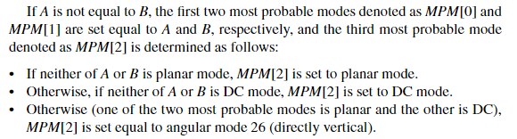

预测模式编码
亮度 PB 区块
HEVC 的亮度 PB 区块帧内预测模式编码规则为，先从邻近左侧和上侧的 PU 依据某规则推断出三个不重复的最可能被选择的候选预测模式，若所选择的最佳预测模式正好为依此规则推断出的三个候选模式，则编码所选模式在三个候选模式排序列表中的索引，若不为，则采用 5bit 编码所选模式在全部 35 种预测模式去掉 3 个候选模式后剩余 32 个模式排序列表中的索引
三个候选模式的选定规则如下：
-
设左侧 PU 的 PU 的预测模式为 A，上侧 PU 的预测模式是 B，当 A B 不相等时

如果 A B 不等，那么三个候选模式一个 A 一个 B，最后一个选 Planar、DC 或者模式 26（前者被选了选后者）
-
当 A B 相等时

在一般情况下：
-
如果 AB 是 DC 或者 Planar，那么三个模式就一个 Planar 一个 DC 一个 26
-
如果 AB 是角度模式，那么三个模式就一个 A 一个 A-1 模式 一个 A+1 模式
比如如果 A 是 20 模式，那么 MPM[1] 是 19 模式，MPM[2] 是 21 模式
需要注意两个特殊情况：
- 如果 A 是 2 模式，那么 MPM[1] 是 33 模式，MPM[2] 是 3 模式
- 如果 A 是 34 模式，那么同样也是 MPM[1] 是 33 模式，MPM[2] 是 3 模式
-
-
如果 A B 模式可能不可用时
- 当左侧或上侧 PU 不是帧内编码模式或者是采用 PCM 模式时其预测模式被设为 DC 模式
- 当上侧的 PU 超出 CTU 范围时 B 同样被设为 DC 模式
其流程可以总结为下图

亮度 PB 区块三个候选模式（MPM）的预测流程
prev_intra_luma_pred_flag 确定亮度区块的最佳预测模式是否为三个预测的最佳模式之一（但是没在程序里搜到这个），rem_intra_luma_pred_mode 用于存储当 prev_intra_luma_pred_flag 为 0 时直接编码的亮度区块的最佳预测模式，通过 rem_intra_luma_pred_mode 推断实际预测模式序号的方法如下

注意是大于等于
色度 PB 区块
色度 PB 区块的编码不进行候选预测模式的选择，而是依照如下规则进行直接编码

色度预测模式编码的具体实现可参考 TEncSbac::codeIntraDirChroma 函数，色度预测模式解码的具体实现可参考 TDecSbac::parseIntraDirChroma 函数， 由编码函数可见，编码逻辑为首先判断色度预测模式是否为推断模式（DM_CHROMA_IDX），若是，在码流中输出一个标志位 0，之后编码结束，若不是，则在码流中输出一个标志位 1，之后输出所选择的色度 PB 区块预测模式在前四种预测模式（PLanar DC 模式10 模式26）排序序列中的索引，也就是 00 01 10 11，最后编码结果就如上图 Table 4.5，解码函数也依照此规则解码
-
TEncSbac::codeIntraDirChroma色度预测模式编码函数代码Void TEncSbac::codeIntraDirChroma( TComDataCU* pcCU, UInt uiAbsPartIdx ) { UInt uiIntraDirChroma = pcCU->getIntraDir( CHANNEL_TYPE_CHROMA, uiAbsPartIdx ); // 判断是否为推断模式 if( uiIntraDirChroma == DM_CHROMA_IDX ) { // 是，编码标志位 0 m_pcBinIf->encodeBin( 0, m_cCUChromaPredSCModel.get( 0, 0, 0 ) ); } else { // 否，编码标志位 1 m_pcBinIf->encodeBin( 1, m_cCUChromaPredSCModel.get( 0, 0, 0 ) ); UInt uiAllowedChromaDir[ NUM_CHROMA_MODE ]; pcCU->getAllowedChromaDir( uiAbsPartIdx, uiAllowedChromaDir ); // 编码选择的色度预测模式的索引 for( Int i = 0; i < NUM_CHROMA_MODE - 1; i++ ) { if( uiIntraDirChroma == uiAllowedChromaDir[i] ) { uiIntraDirChroma = i; break; } } m_pcBinIf->encodeBinsEP( uiIntraDirChroma, 2 ); } return; } -
TDecSbac::parseIntraDirChroma色度预测模式解码函数代码Void TDecSbac::parseIntraDirChroma( TComDataCU* pcCU, UInt uiAbsPartIdx, UInt uiDepth ) { UInt uiSymbol; #if RExt__DECODER_DEBUG_BIT_STATISTICS const TComCodingStatisticsClassType ctype(STATS__CABAC_BITS__INTRA_DIR_ANG, g_aucConvertToBit[pcCU->getSlice()->getSPS()->getMaxCUWidth()>>uiDepth]+2, CHANNEL_TYPE_CHROMA); #endif m_pcTDecBinIf->decodeBin( uiSymbol, m_cCUChromaPredSCModel.get( 0, 0, 0 ) RExt__DECODER_DEBUG_BIT_STATISTICS_PASS_OPT_ARG(ctype) ); // 标志位是 0，则预测模式为推断模式 if( uiSymbol == 0 ) { uiSymbol = DM_CHROMA_IDX; } // 标志位是 1，则从 uiAllowedChromaDir（就是 uiModeList）通过索引恢复选择的预测模式 else { UInt uiIPredMode; m_pcTDecBinIf->decodeBinsEP( uiIPredMode, 2 RExt__DECODER_DEBUG_BIT_STATISTICS_PASS_OPT_ARG(ctype) ); UInt uiAllowedChromaDir[ NUM_CHROMA_MODE ]; pcCU->getAllowedChromaDir( uiAbsPartIdx, uiAllowedChromaDir ); uiSymbol = uiAllowedChromaDir[ uiIPredMode ]; } pcCU->setIntraDirSubParts( CHANNEL_TYPE_CHROMA, uiSymbol, uiAbsPartIdx, uiDepth ); }
色度编码模式默认的排列序列 uiModeList 由 TComDataCU::getAllowedChromaDir 函数生成，其逻辑如下
-
如果亮度 PB 的预测模式不为 0，1，10，26 之一，那么
uiModeList为uiModeList[0] = PLANAR_IDX; uiModeList[1] = VER_IDX; uiModeList[2] = HOR_IDX; uiModeList[3] = DC_IDX; uiModeList[4] = DM_CHROMA_IDX; -
如果亮度 PB 的预测模式为这四种模式之一，那么将在上式的基础上，执行以下代码，把
uiModeList中等于亮度 PB 预测模式的那个值换成 34for( Int i = 0; i < NUM_CHROMA_MODE - 1; i++ ) { if( uiLumaMode == uiModeList[i] ) { uiModeList[i] = 34; // VER+8 mode break; } }
补充
- H.264 在编码亮度 PB 区块的预测模式时只会推断一个最可能的候选模式